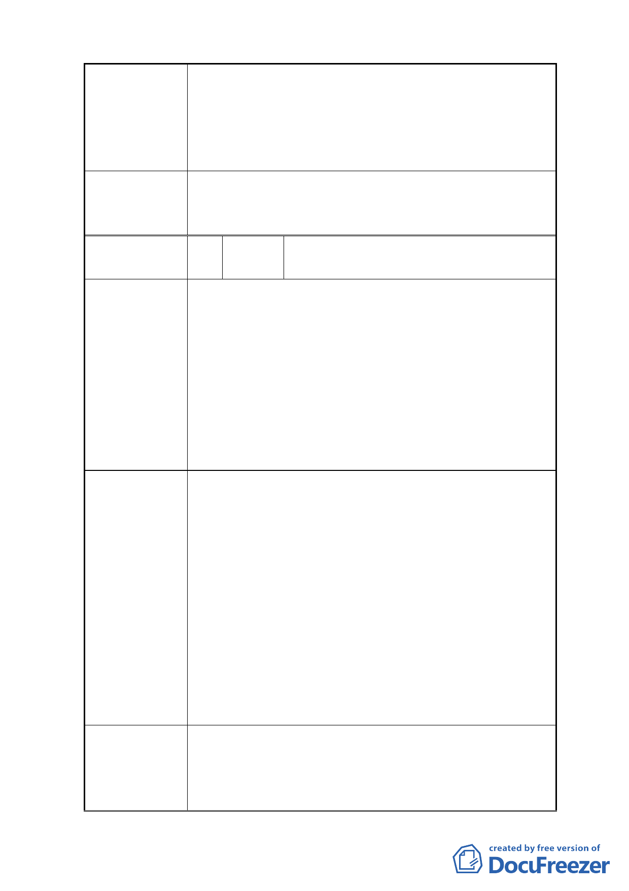

1.建議將本變更計畫案有關指定退縮留設 3.64 公尺帶
狀開放空間之「應留設 2.5 公尺」淨寬之人行空間，
建 議 辦 法 宜增寬其長度面積。
2.可參考本校校門口之人行空間寬度拓寬約 5 公尺，以
利行走安全與學生上下學行走之便利。
本案細部計畫內容涉及變更後之使用分區名稱適用性，
委 員 會 決 議 及其用地取得方式之適法性與取得費用之經費支應程序
等疑義尚待釐清，全案退回市府依程序辦理。
陳載福、蔡玉華、林清忠、吳坤泰、陳貴
編 號 3 陳情人 發、林新南、洪正芬、洪 春
1.所稱電力設施，範圍廣泛，若有隱藏變電所或相關有
毒材料廢料儲存放，週邊多為住三用地及學校機關用
地，即將危害居民及學童健康。
2.電力公司企圖用文字蒙蔽更改住宅用地為電力設施使
陳 情 理 由 用，恐有使用作變電所及堆放電力有毒物件。且變電
所產生電磁波、堆放有毒物件等危害住戶生命財產安
全。
3.周邊兩間學校與稠密住宅區何苦一定要興建危害居民
健康與堆放電力材料之設施。
1.維持住三用地，反對變更為電力設施使用，以免引起
居民惶恐與疑慮。
2.可興建住宅，配售員工；或可蓋住宅型態之員工差假
休閒中心，並結合社區活動需求、民眾服務處、地下
停車場等設施與優惠回饋里民。
3.此路段學生出入頻繁，又屬文教區，較適合興建居民、
建 議 辦 法 休閒、運動或青少年活動中心，攀爬、室內網球場等
居民健康休閒去處。
4.請求電力公司遷移用地於郊外，以免危害居民、學童
健康安全。
5.請市政府保護市民，不與電力公司危害市民生命財產
安全。如不接受建議將採取最強烈之抗爭。
本案細部計畫內容涉及變更後之使用分區名稱適用性，
及其用地取得方式之適法性與取得費用之經費支應程序
委 員 會 決 議 等疑義尚待釐清，全案退回市府依程序辦理。
-3-